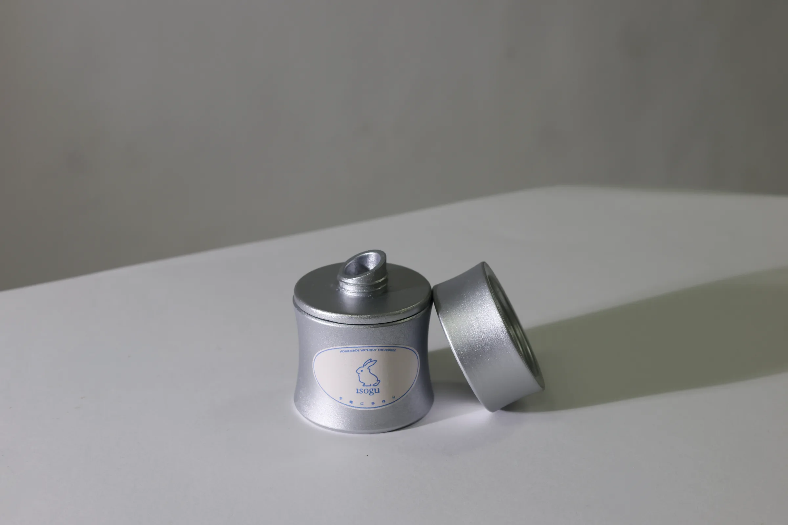
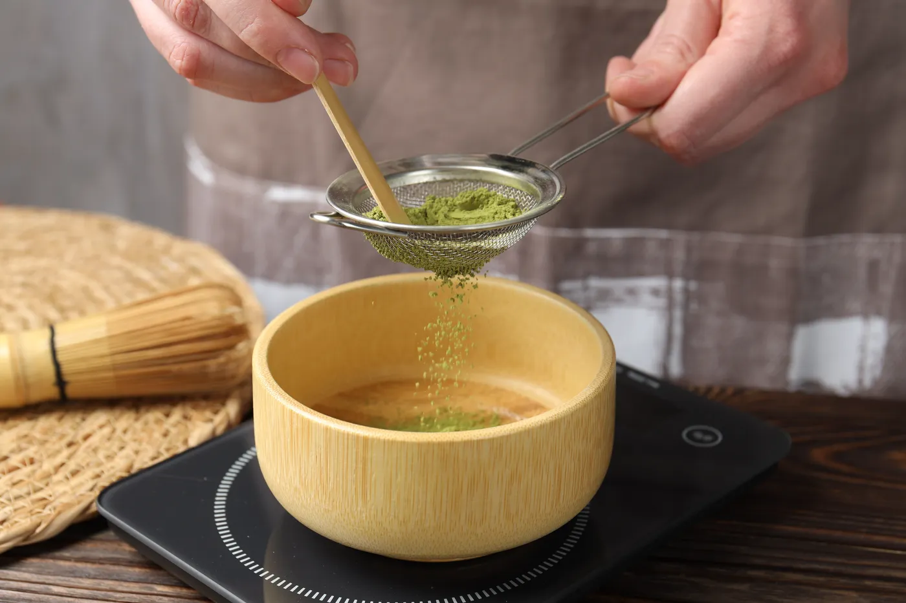
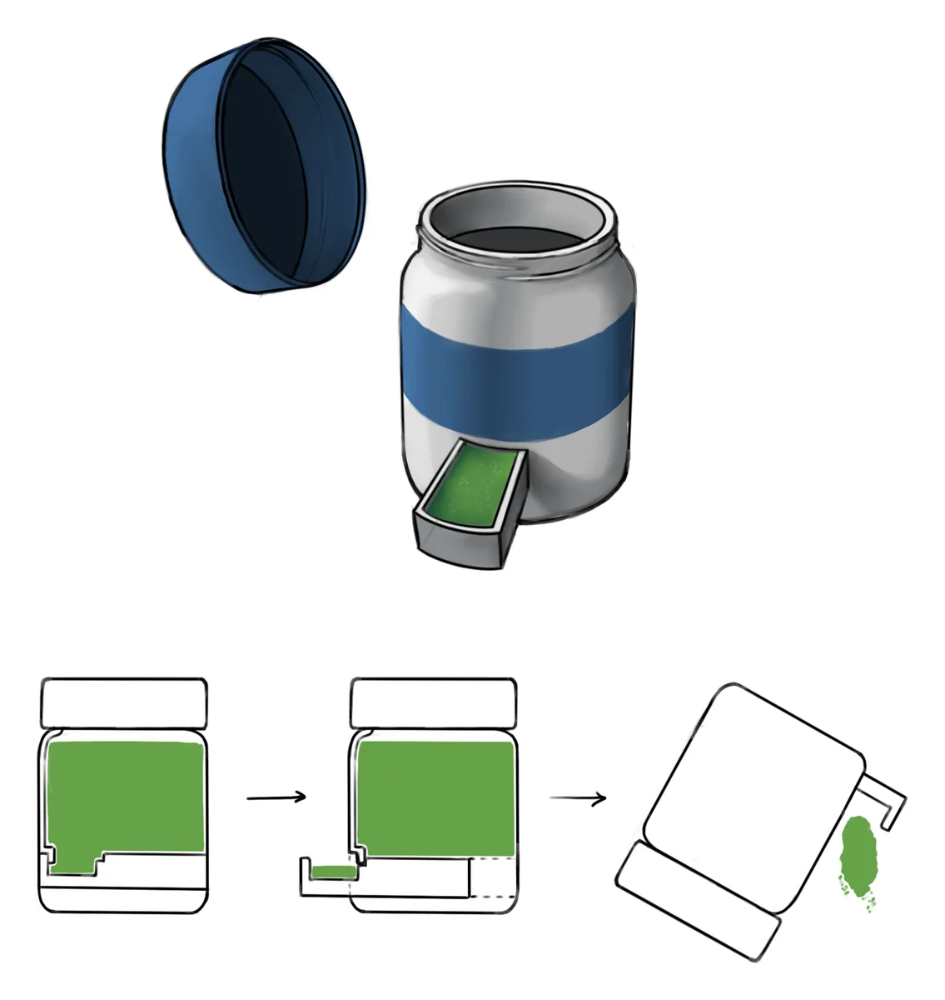
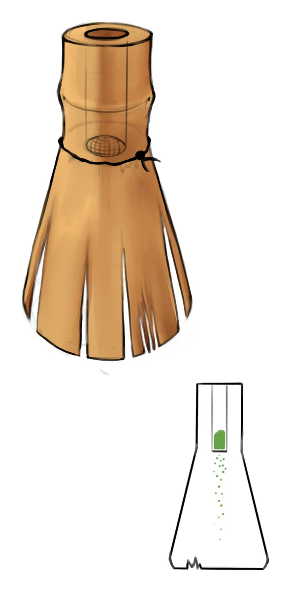

University of Illinois Urbana-Champaign
Aug 2025 – May 2029
Industrial Design + Data Science
4.0 GPA · Dean’s List (F25, S26) · James G. Hansen Scholarship recipient
i love making things work well and look cool!

I’m a second year industrial design student at the University of Illinois Urbana-Champaign, having lots of fun thinking and designing for the user.
I was born and raised in Kuala Lumpur, Malaysia, and have spent many winters and summers in Taipei visiting family. Now, I’m in an exciting new chapter of life in Champaign, Illinois, exploring the vastly different everyday and design culture of the USA!
Industrial Design + Data Science
4.0 GPA · Dean’s List (F25, S26) · James G. Hansen Scholarship recipient
Product Designer · synthesizing insights from user interviews
Social Media Director
Digital Marketing Intern
Marketing Content Creator
English (native) · Mandarin Chinese · Malay · Japanese (conversational)
Intuitive designs · Matcha · My dog (Roxie!) · Aquatic animals · Baking
fun fact: i took the background video at the osaka aquarium!


These start-up costs and time commitments keep people from making a quick, good matcha at home, so they keep paying café prices or give up on matcha altogether.
How can the matcha making process be more economical and efficient for busy, new home baristas with limited resources?
I took 3 of the best concepts digital, and compared them to existing products.



Both Concept 2 and 3 proved to be considerably better than Concept 1. While the two ranked similarly, Concept 3 scored higher on the less significant categories, covering smaller details that Concept 2 might have missed.
0 is the baseline: existing products. Each concept is scored by how much better (+) or worse (−) it does in each category.
| category | existing products | concept 1Push-out Spoon | concept 2Built-in Spout & Sieve | concept 3Whisk with Built-in Sieve |
|---|---|---|---|---|
| Efficiency (5) | 0 | −2 | −2 | −3 |
| Straightforward (5) | 0 | −4 | −1 | −1 |
| Storage (5) | 0 | +1 | +1 | +1 |
| Delight (5) | 0 | +2 | +5 | +5 |
| Tastiness (5) | 0 | +3 | +4 | +5 |
| Mess-free (3) | 0 | −1 | −1 | +2 |
| Aesthetically familiar (2) | 0 | +1 | +1 | +2 |
| total | 0 | 0 | +7 | +11 |